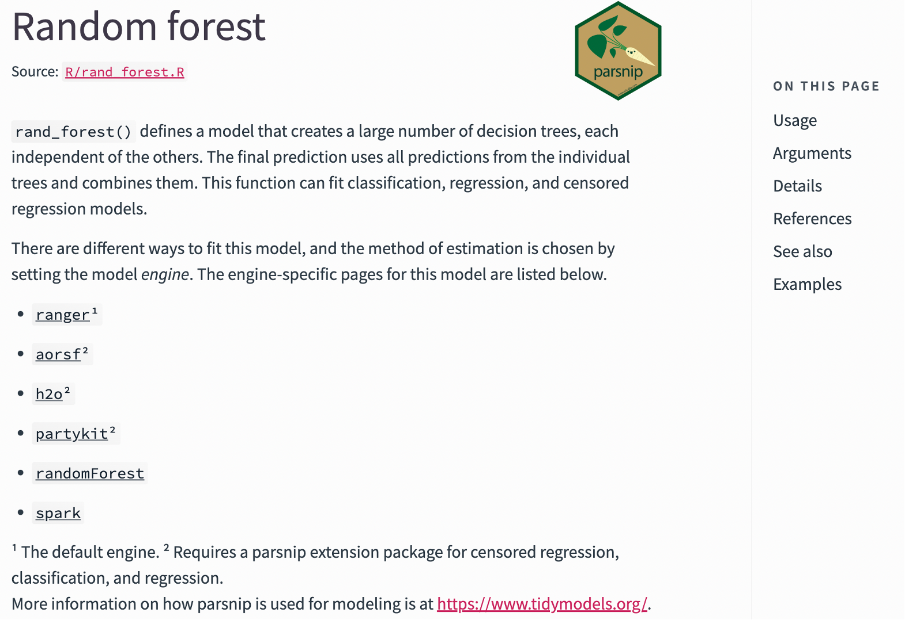
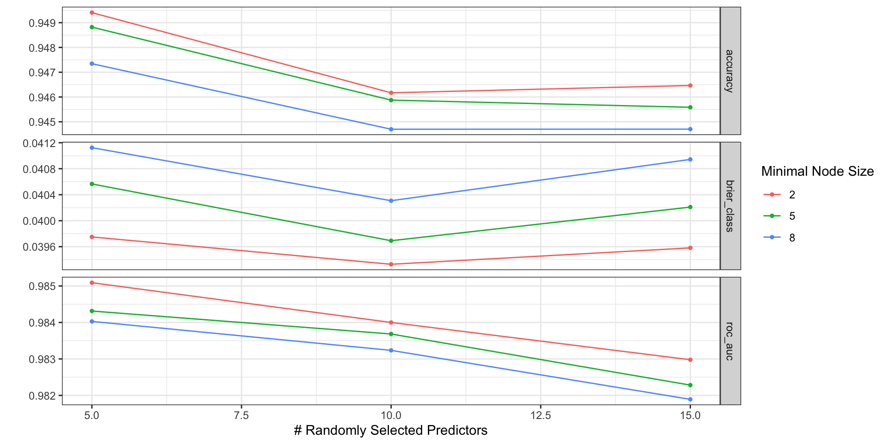
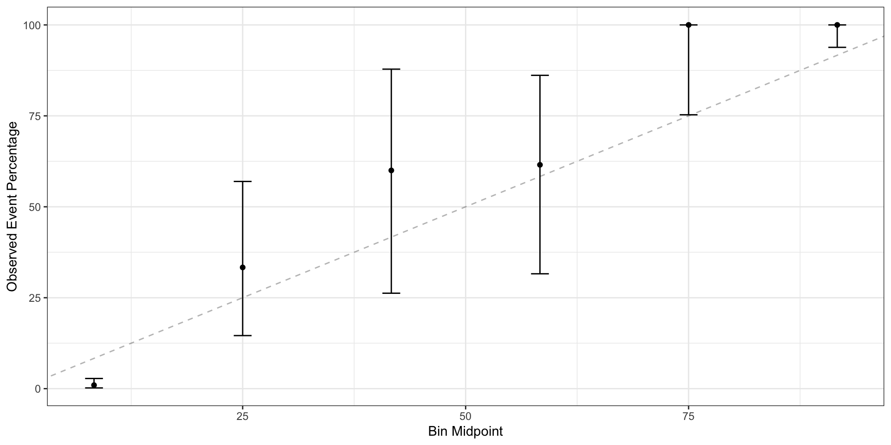

Supervised ML in clinical applications
EXMD 601, McGill University
3/20/23
R packages used
Agenda
- Types of supervised learning
- Model development and selection
- Clinically useful models
Supervised learning in a nutshell
Development: Learn to predict output of interest on labeled examples (features + outcome)
- Complex functions mapping inputs to output
Deployment: Generate prediction for new unlabeled example

ML vs. statistical modeling
Relationship between variables learned from data, not pre-specified
Allows complex non-linear relationships
Less interpretable
Fewer theoretical guarantees
Not fit for causal inference! (Except for causal ML)

Regression
Predict continuous outcome
Examples: hemoglobin level, length of stay
Statistics analog: linear regression
“Classification” or risk prediction
Predict categorical event (death, recurrence, rehospitalization)
Statistics analog: logistic regression
Includes multiclass models (e.g., which of 10 diagnoses is it)
Dichotomania
Strict classification only returns the most likely class
- “Patient will get pneumonia”
Estimated risk >> strict classification
51% vs. 99% chance of pneumonia is different
Optimal clinical decision often differs based on risk (e.g., do nothing, treat or conduct additional test) and other variables
Always question value and viability models that don’t give estimated risk
Visualizing estimated risk
Computer vision
Analyze pixel data
Often, goal is to outline pbjects and assign label
Person, car or tree
Abnormality, tumor
Used for X-ray, ultrasound, microscopy images
Agenda
- Types of supervised learning
- Model development and selection
- Clinically useful models
Our example data1
Tabular data derived from cardiotocograms (CTGs) from 2126 pregnant patients.
Outcome: fetal health is normal vs. suspect, or pathological.
Our example data
dt <- read_csv("fetal_health.csv") |>
mutate(fetal_health = as.factor(ifelse(fetal_health==1,"Normal", "Abnormal")))
str(dt)tibble [2,126 × 22] (S3: tbl_df/tbl/data.frame)
$ baseline value : num [1:2126] 120 132 133 134 132 134 134 122 122 122 ...
$ accelerations : num [1:2126] 0 0.006 0.003 0.003 0.007 0.001 0.001 0 0 0 ...
$ fetal_movement : num [1:2126] 0 0 0 0 0 0 0 0 0 0 ...
$ uterine_contractions : num [1:2126] 0 0.006 0.008 0.008 0.008 0.01 0.013 0 0.002 0.003 ...
$ light_decelerations : num [1:2126] 0 0.003 0.003 0.003 0 0.009 0.008 0 0 0 ...
$ severe_decelerations : num [1:2126] 0 0 0 0 0 0 0 0 0 0 ...
$ prolongued_decelerations : num [1:2126] 0 0 0 0 0 0.002 0.003 0 0 0 ...
$ abnormal_short_term_variability : num [1:2126] 73 17 16 16 16 26 29 83 84 86 ...
$ mean_value_of_short_term_variability : num [1:2126] 0.5 2.1 2.1 2.4 2.4 5.9 6.3 0.5 0.5 0.3 ...
$ percentage_of_time_with_abnormal_long_term_variability: num [1:2126] 43 0 0 0 0 0 0 6 5 6 ...
$ mean_value_of_long_term_variability : num [1:2126] 2.4 10.4 13.4 23 19.9 0 0 15.6 13.6 10.6 ...
$ histogram_width : num [1:2126] 64 130 130 117 117 150 150 68 68 68 ...
$ histogram_min : num [1:2126] 62 68 68 53 53 50 50 62 62 62 ...
$ histogram_max : num [1:2126] 126 198 198 170 170 200 200 130 130 130 ...
$ histogram_number_of_peaks : num [1:2126] 2 6 5 11 9 5 6 0 0 1 ...
$ histogram_number_of_zeroes : num [1:2126] 0 1 1 0 0 3 3 0 0 0 ...
$ histogram_mode : num [1:2126] 120 141 141 137 137 76 71 122 122 122 ...
$ histogram_mean : num [1:2126] 137 136 135 134 136 107 107 122 122 122 ...
$ histogram_median : num [1:2126] 121 140 138 137 138 107 106 123 123 123 ...
$ histogram_variance : num [1:2126] 73 12 13 13 11 170 215 3 3 1 ...
$ histogram_tendency : num [1:2126] 1 0 0 1 1 0 0 1 1 1 ...
$ fetal_health : Factor w/ 2 levels "Abnormal","Normal": 1 2 2 2 2 1 1 1 1 1 ...Overfitting
Holding out a test set
Allocate some of your data as the hold out test set
Use the remaining data to train model
At the very end, run only one final model on the test set for an unbiased estimate of performance
Splitting with rsample
Stratified split
#Split while stratifying on outcome
ctg_split_strat <- initial_split(dt, prop = 0.8 ,strata = fetal_health)
#Distribution of outcome in train and test sets
table(training(ctg_split_strat)$fetal_health)/nrow(training(ctg_split_strat))
Abnormal Normal
0.2211765 0.7788235
Abnormal Normal
0.2230047 0.7769953 Stratifying is easy to do and can help ensure data is representative across splits
Model selection
If training one model, can train on full training data
Usually, want to compare several model configurations and select the best one
Model configuration = algorithm + hyperparameters
Algorithm: type of model (e.g., random forest)
Hyperparameter: a ‘setting’ of that model (e.g., minimum node size)
Requires further splitting of training data to separate training and validation tasks.
Cross validation
Randomly assign each row of data to a ‘fold’

Cross validation

Cross validation
Split training set for cross validation
ctg_folds <- vfold_cv(training(ctg_split_strat),
v=3, #three folds
strata = fetal_health, #stratified on outcome
repeats = 2) #two repeats
ctg_folds# 3-fold cross-validation repeated 2 times using stratification
# A tibble: 6 × 3
splits id id2
<list> <chr> <chr>
1 <split [1132/568]> Repeat1 Fold1
2 <split [1134/566]> Repeat1 Fold2
3 <split [1134/566]> Repeat1 Fold3
4 <split [1132/568]> Repeat2 Fold1
5 <split [1134/566]> Repeat2 Fold2
6 <split [1134/566]> Repeat2 Fold3Evaluating models
Performance metrics identify how ‘good’ the model is for given dataset
- Perfectly predicts outcome = perfect performance
- Error metrics: smaller is better
- Positive metrics: bigger is better
Metrics differ for regression vs. classification
Regression metrics
Per each example, error is difference between actual outcome \(y\) and predicted outcome \(\hat{y}\)
- Mean absolute error: \(\frac{1}{n} \sum \mid y - \hat{y} \mid\)
- Mean squared error: \(\frac{1}{n} \sum [y - \hat{y}]^2\)
- Root mean squared error: \(\sqrt{\frac{1}{n} \sum [y - \hat{y}]^2}\)
Classification metrics: confusion matrix-based
After dichotomizing predicted risk, you can create a confusion matrix
Many metrics derived from it
Accuracy: \(\frac{TP+TN}{TP+TN+FP+FN}\)
Precision: \(\frac{TP}{PT+FP}\)
Recall: \(\frac{TP}{TP+FN}\)
Often don’t want to dichotomize in model selection for clinical prediction tasks.
Area under the ROC curve
Measure of discrimination: Higher if the examples with a positive outcome were assigned a hgiher risk score
-,-,-,-,-,+,+,+,+ \(\rightarrow\) AUC=1 (perfectly discriminated +’s from -’s)
-,+,-,+,-,+,-,+,-,+ \(\rightarrow\) AUC = 0.5 (random chance)
Does not measure calibration (how closely the predicted probabilities match actual risk)

Performance in train, test, validate data
Performance on training data optimistic due to overfitting
- Use for nothing
If many models compared, performance of top model on validation data (e.g., cross validation folds) also optimistic
- Use for selection only
Performance on test data only unbiased measure of performance
tidymodels
Random forest model
Ensembles (combines) many decision trees
Uses bootstrap resampling to randomly select which training examples are used in each tree
Covariates used for branching each tree also random
Trees ‘votes’ are counted to estimate probability of outcome
Decision tree example
Random forest in tidymodels
Random forest hyperparameters
Tuning random forest model
#specify a recipe (prediction task as formula;
#. can also include preprocessing)
ctg_recipe <- recipe(fetal_health~., data=dt)
#specify random forest model for tuning
rf_tune_spec <- rand_forest(mtry = tune(),
trees = 1000,
min_n = tune(),
mode = "classification")
rf_tune_specRandom Forest Model Specification (classification)
Main Arguments:
mtry = tune()
trees = 1000
min_n = tune()
Computational engine: ranger Grid of hyperparameter settings
#Create grid of hyperparameters for tuning
rf_grid <- grid_regular(
mtry(range = c(1, 10)),#number of predictors sampled at each split of tree
min_n(range = c(2, 11)),#Minimum datapoints in node for further split
levels = 3
)
rf_grid# A tibble: 9 × 2
mtry min_n
<int> <int>
1 1 2
2 5 2
3 10 2
4 1 6
5 5 6
6 10 6
7 1 11
8 5 11
9 10 11Tune the random forest model
We have 2 repeats of 3 fold cross validation and 3x3 hyperparameter settings. How many random forest models will we train before selecting the top model?
Compare AUC by hyperparameter setting
Evaluate top configuration in test set
# A tibble: 3 × 8
mtry min_n .metric .estimator mean n std_err .config
<int> <int> <chr> <chr> <dbl> <int> <dbl> <chr>
1 5 2 roc_auc binary 0.987 6 0.000290 Preprocessor1_Model2
2 5 6 roc_auc binary 0.987 6 0.000276 Preprocessor1_Model5
3 5 11 roc_auc binary 0.986 6 0.000271 Preprocessor1_Model8best_auc <- select_best(rf_tune_results, metric = "roc_auc")
#Specify a model with best hyperparameters
rf_best_spec <- rand_forest(mtry = best_auc$mtry,
trees = 1000,
min_n = best_auc$min_n,
mode = "classification") |>
set_engine("ranger", importance = "impurity")
#Trains top configuration on all training set; predict on test set
rf_test_results <- last_fit(
rf_best_spec,
ctg_recipe,
split = ctg_split_strat)Predict on test set
# A tibble: 2 × 4
.metric .estimator .estimate .config
<chr> <chr> <dbl> <chr>
1 accuracy binary 0.951 Preprocessor1_Model1
2 roc_auc binary 0.986 Preprocessor1_Model1# Compare predicted risk to actual outcome
preds <- predict(extract_workflow(rf_test_results), testing(ctg_split_strat), type="prob")
dt_pred_outcome <- cbind(preds,
truth =testing(ctg_split_strat)$fetal_health)
head(dt_pred_outcome,5) .pred_Abnormal .pred_Normal truth
1 0.933500 0.066500 Abnormal
2 0.625500 0.374500 Abnormal
3 0.000000 1.000000 Normal
4 0.201500 0.798500 Abnormal
5 0.341875 0.658125 NormalPlot the ROC curve
Assess calibration

Plot variable importance
Model development takeaways
Model development separates model training, validation/comparison/selection, and testing
Only unbiased performance estimate comes from test data not used for training or selection
For applied ML, rigorous model development more important than in-depth understanding of algorithms
Agenda
- Types of supervised learning
- Model development and selection
- Clinically useful models
Switching to Powerpoint
Link here